The well-drawn city on the edge of the Atlantic Ocean
Essaouira is a port city on the edge of the Atlantic Ocean with a population of around 77,966. Between 1912 and 1956 (period of the French protectorate of Morocco), it was called "Mogador", a name derived from the regional saint Sidi Mogdoul. and after the independence of Morocco in 1957, the name of the city was changed to Essaouira which means the castle immured by a wall.
Essaouira has a very beautiful and diverse nature, located particularly on the islet of Mogador, and the areas around the city. In 1980 the islet of Mogador was designated a biological reserve. It is a natural and ornithological site of which it is home to several species of birds such as gulls, great cormorants, grouse and crows, in addition between April and October 700 very rare pairs of Eleonore hawks come to reproduce there before leaving for Madagascar.
The city of Essaouira is also distinguished by the argan tree. Only found in Morocco, it also is the city's main plant wealth and occupies a very important position in the region due to its ecological, social and economic role. In fact, the tree provides environmental, cosmetic and physiological benefits, and produces argan oil that is popular all over the world due to its use in cosmetics.
The city also has a mild climate that makes it more wonderful, as it is very similar to the climate of the southern California coast, such as Los Angeles and San Diego. in short, its climate is pleasant throughout the year with very mild and slightly rainy winters and pleasantly hot and dry summers with no excessive heat because the ocean is very cool.
Due to its geographical location and its natural and cultural wealth, it is considered one of the most important tourist cities in Morocco. Indeed, since the end of the 20th century, Essaouira has experienced a spectacular renaissance due mainly to tourism and the medina of Essaouira has been listed as a UNESCO World Heritage Site since 2001.
Archaeological and tourist sites
SKALA
Essaouira's "Skala" walls were erected in the 18th century to protect the city from foreign invasions. It is a perimeter around the Medina designed by the French architect Theodore Cornut, chosen by Sultan Muhammad bin Abdullah, and inspired by the fortifications of Saint Malo. Skala is also one of the best spots to watch the sunset. You can see the shadows of birds and the orange light of the sunset reflecting off the fences and cannons.
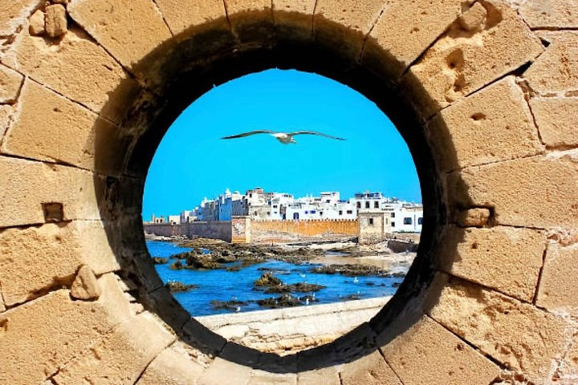
PORT
The port of Essaouira is a must if you are going to visit Essaouira. Formerly known as the “port of Timbuktu”. It is one of the three most important sardine ports in Morocco. It is the busiest place in town, especially in the early afternoon. The fishing boats return and unload their catch of the day. Sea bream, sardines and other crustaceans are then sold at the Fish Market, in a cacophonous atmosphere of course, but all in all organized. A few steps away, eateries cook these fresh products for instant tasting.
SOUK
Essaouira's souk is a real treasure trove of souvenirs, as it is located along the narrow and bright streets of the city and you can find a variety of products such as traditional clothing, jewelry, textiles, spices and many more...
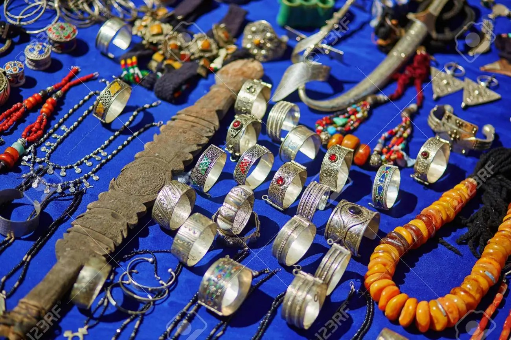
Women's Argan oil production cooperatives
A few kilometers from Essaouira, you will find cooperatives managed by women who work the fruit of the argan tree to produce certified organic edible or cosmetic oil. You will meet the workers who will explain all the manufacturing process to you. You will learn in particular that it takes 35 kilograms of dried fruit and 20 hours of work to produce one liter of Argan oil.
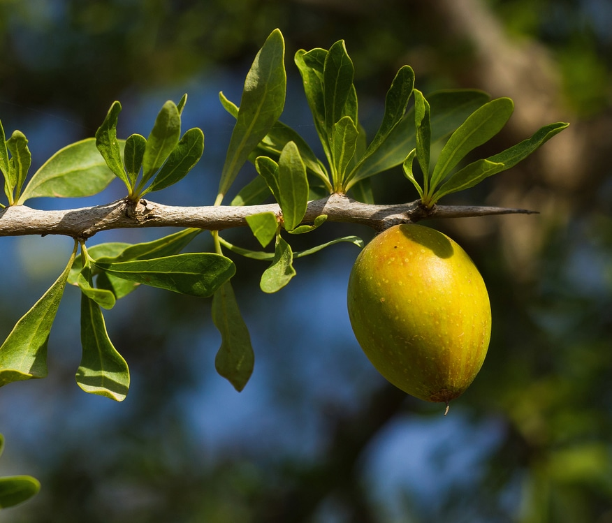
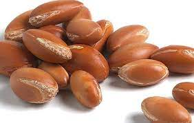
Music and Sport
The Gnaoua and World Music Festival
Every year, at the end of June, the Gnaoua and World Music Festival is a real springboard for the Gnaoua musical genre. it offers four nights of musical, artistic and cultural shows on more than 6 large stages spread over the medina of Essaouira. Guests will be able to enjoy contemporary funk, blues, jazz, reggae and soul performances from Africa and beyond.
Nautical sports: Surfing, Kitesurfing and Windsurfing
The beaches of Essaouira are privileged places for nautical sports because of the winds which blow there all year round and which create beautiful waves. you will also find on the seafront rental shops for jet skis, surfboards, windsurfing and kitesurfing equipment. even if you have never practiced, you can take lessons from local experts, they offer courses for all levels, from beginners to more advanced.
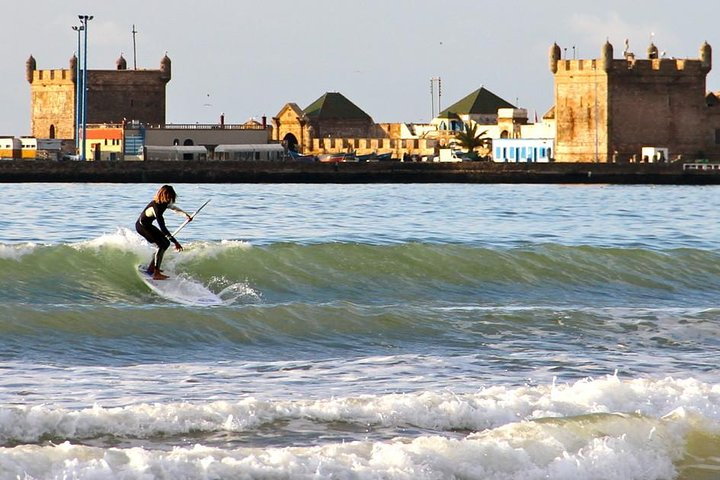
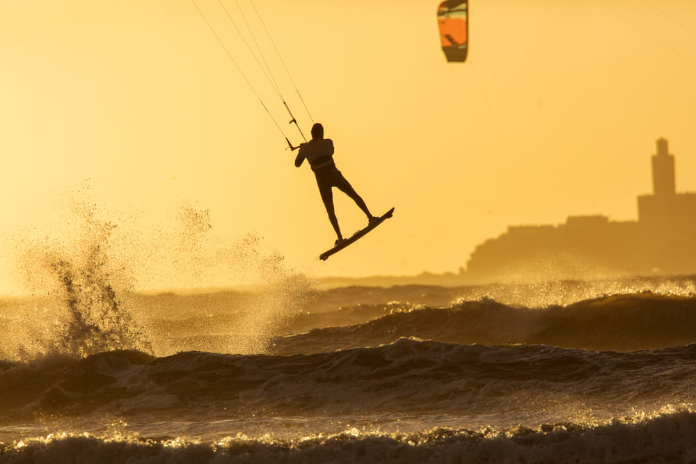
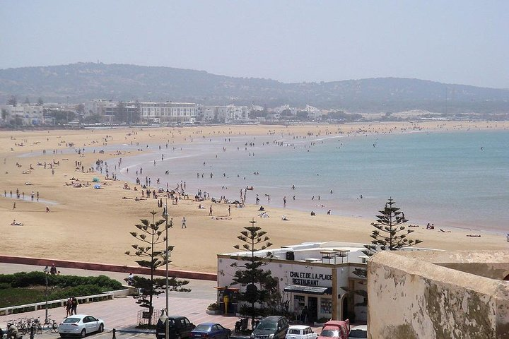
Your Opinion Matters
If you want to explore and know more about this charming and beautiful Moroccan city, do not hesitate to visit this site 'visitmorocco'


 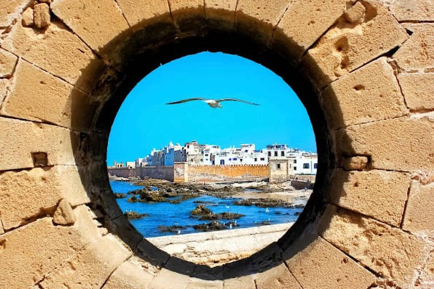
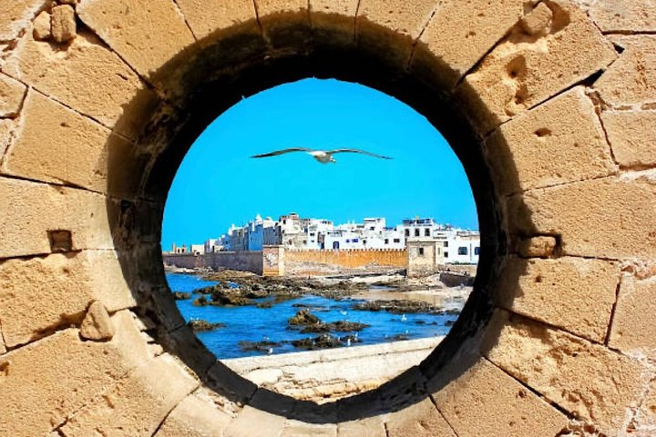


 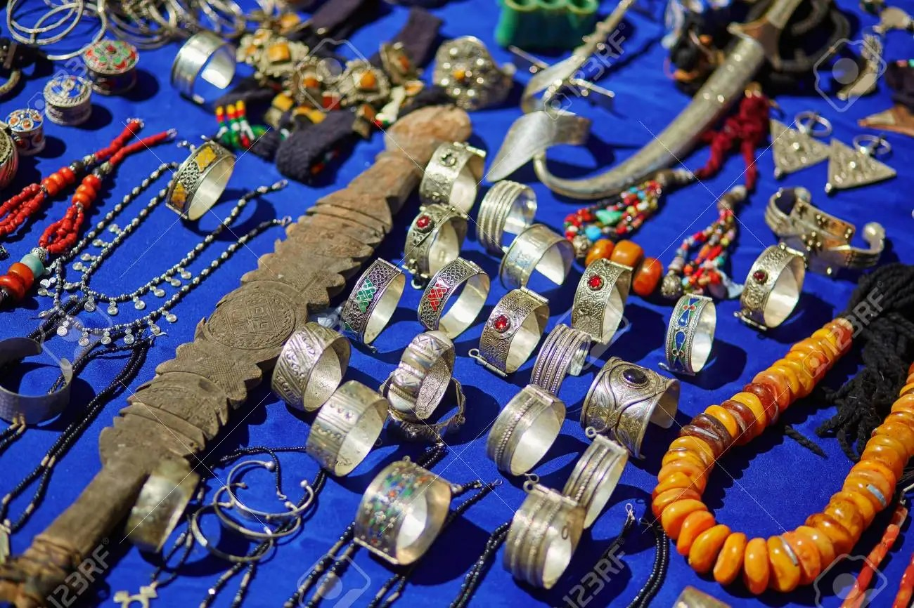
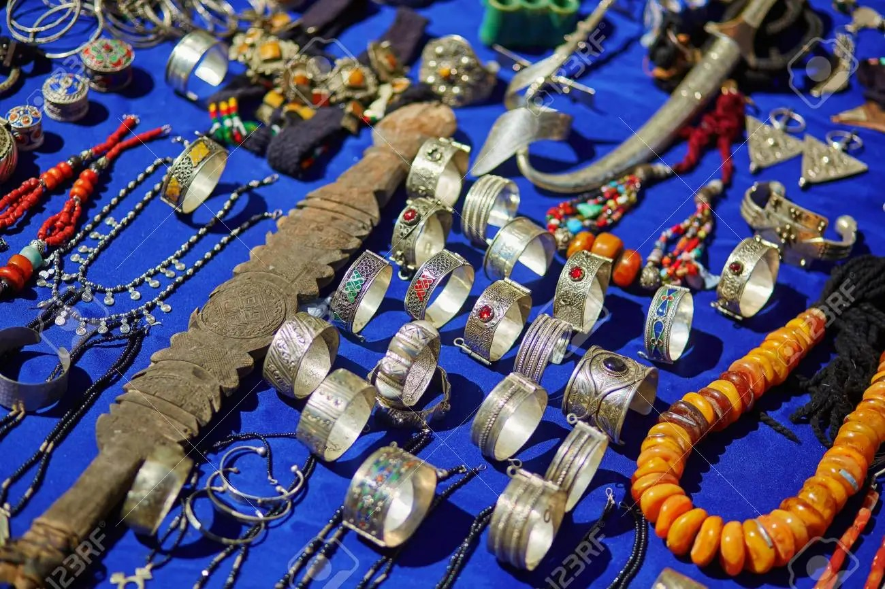